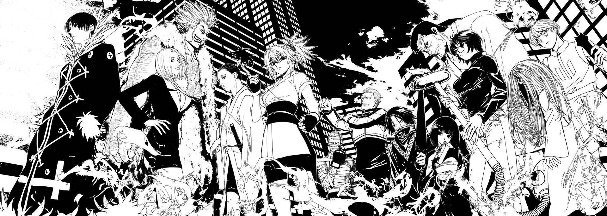

Hisoka
The Phantom Troupe, also known as the Spider, is a notorious group of thieves and assassins in Hunter x Hunter, renowned for their strength, loyalty, and ruthlessness. Led by the enigmatic Kuroro Lucilfer, the group consists of thirteen members, each with unique abilities and personalities. Among them are Hisoka, a cunning and bloodthirsty fighter; Feitan, a sadistic interrogator with devastating Nen abilities; Machi, a skilled healer and thread manipulator; and Uvogin, a powerhouse of brute strength. Despite their criminal nature, the Troupe shares a deep bond, valuing their unity and the symbol of the Spider above all else. Each member plays a crucial role in their missions, whether it’s combat, strategy, or infiltration, making them one of the most feared and iconic groups in the series. Their complex dynamics and individual backstories add depth to their characters, blurring the lines between villainy and humanity.
